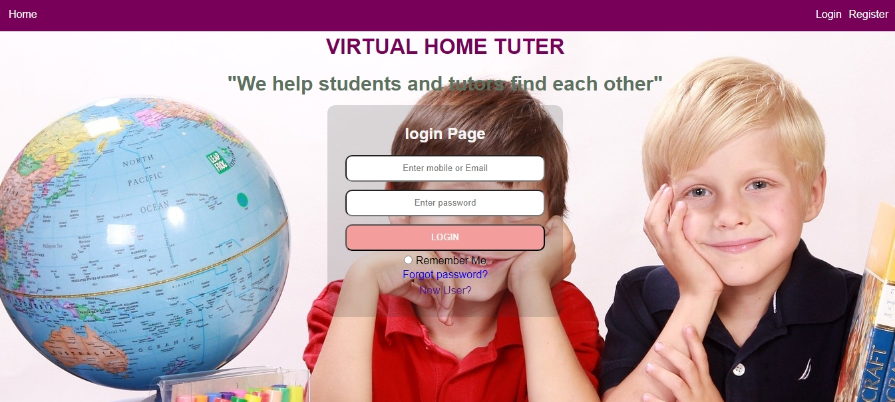
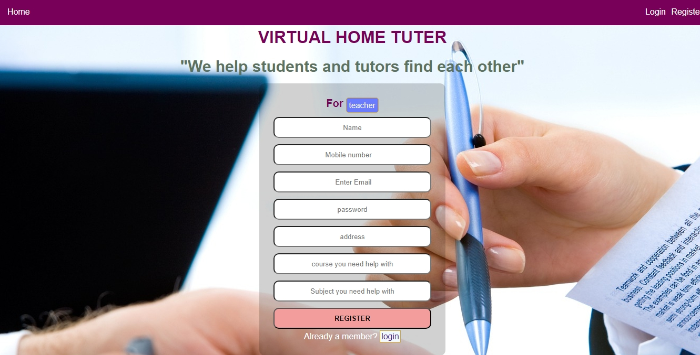
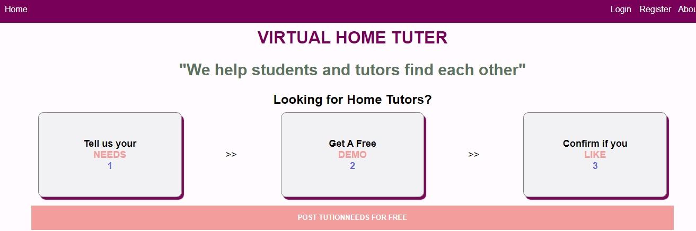
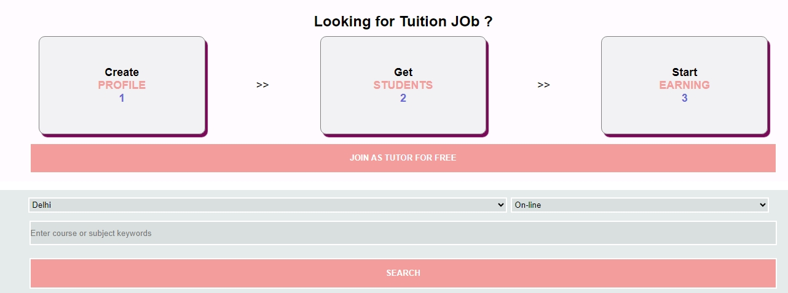

About Me
I am a B.Tech Computer Science graduate with over a year of experience in the IT industry, specializing
as an integration expert in the fintech sector. My expertise lies in full-stack development, with a
strong focus on backend development and business logic. I have successfully contributed to various
projects, receiving commendations for my work.
Design Philosophy
As a freelance full-stack developer specializing in fintech, my design philosophy is grounded in the
following principles:
- User-Centric Design: I prioritize the end user’s experience by conducting thorough
research and gathering feedback to ensure my designs meet their needs and expectations.
- Simplicity and Clarity: I believe in creating clean, simple designs that enhance
usability, avoiding clutter and complexity to deliver intuitive interfaces.
- Consistency: I strive for a consistent look and feel across all applications, using
uniform colors, typography, and layouts to foster familiarity and comfort for users.
- Scalability: I design with scalability in mind, ensuring that both architecture and
components can evolve and adapt to future needs without extensive rework.
- Modular Development: I embrace a modular approach in both frontend and backend
development, enhancing maintainability and making it easier to implement updates and new features.
- Accessibility: I am committed to incorporating accessibility best practices,
ensuring my applications are usable by everyone and promoting inclusivity within the user base.
- Data-Driven Decisions: I leverage analytics and user feedback to inform my design
choices, regularly assessing user interactions to identify areas for improvement.
- Collaboration: I value collaboration with clients and stakeholders, believing that
diverse perspectives lead to innovative solutions and successful projects.
By adhering to these principles, I aim to create effective and engaging designs that resonate with users
while fulfilling technical requirements.
Work Samples
Project 1:- Quotation Management Backend with Integrated Business Logic.
In this project, I developed well-documented APIs designed to facilitate accurate budget estimation
for a travel and expense SaaS product. These APIs are tailored to meet client requirements based on
specific modules of the product and the business size, which is determined by the number of
employees using the SaaS solution.
Key Features:
- Custom Budget Calculation: The APIs take into account various modules of the
travel and expense product, allowing clients to receive tailored budget recommendations that
align with their unique needs.
- Scalability: The APIs accommodate businesses of different sizes, ensuring that
budget estimations are accurate whether for small teams or large organizations.
- Comprehensive Documentation: Each API is thoroughly documented, providing clear
guidance on usage, endpoints, parameters, and response formats, which facilitates seamless
integration for clients.
My Role: I developed the overall business logic and set up the database, including
queries.
Technologies I used: Python, Flask, PostgreSQL and SQL.
Project 2:-Home Tutor Site
This platform connects students with qualified home tutors, allowing users to find the best matches
based on specific requirements. Key features include:
Key Features:
- User Profiles: Separate profiles for students and teachers with detailed
information.
- Search and Filters: Advanced filters for subjects, grades, and teacher ratings
based on student reviews.
- Ranking System: Teachers are ranked using a combination of knowledge
assessments and student feedback.
- Booking System: Easy scheduling for sessions with calendar integration.
- Communication Tools: Direct messaging and video conferencing options for
seamless interaction.
My Role: I developed the overall frontend of the home tutor site.
Technologies I used: React.js




Project 3:-Mass Management Software for Schools
I developed a comprehensive Mass Management Software specifically designed for schools. This software
simplifies the management of food services and student engagement, enhancing efficiency and
communication within the school community.
Key Features:
- Food Menu Management: Easily create and update daily food menus, allowing
students to know their meal options in advance.
- Student Mess Attendance: Track student attendance in the mess, ensuring
accurate records and enabling better meal planning.
- Daily Food Review: Allow students to provide feedback on meals, helping the
kitchen staff improve food quality and variety based on student preferences.
- Minimize Food Waste: Implement features that monitor food consumption and help
ensure that food wastage is minimized, promoting sustainability within the school.
- User-Friendly Dashboard: Designed with an intuitive interface, the dashboard
allows teachers and administrators to navigate easily and access essential tools.
- Centralized Communication: Facilitate seamless communication among teachers,
students, and parents to keep everyone informed about food services and events.
My Role: I developed the overall frontend and backend of this project.
queries.
Technologies I used: backend:-(Python, Flask, PostgreSQL and SQL.)
frontend:-(html,css,JavaScript,bootstrap)
Project 4:-Middleware Development
Throughout my career, I have successfully developed multiple middleware solutions that serve various
purposes across different industries. My expertise lies in creating robust and scalable middleware
that
enhances communication between disparate systems, streamlines data processing, and improves overall
operational efficiency. By leveraging my skills in software development and integration, I have been
able to address complex challenges and deliver tailored solutions that meet the unique needs of each
field I’ve worked in. My contributions have not only optimized workflows but also facilitated better
data management and interoperability among systems.
Key Features:
- Robust Architecture: Designed to handle high loads and ensure reliability
across systems.
- Streamlined Data Processing: Optimizes workflows and reduces latency in data
handling.
- Tailored Solutions: Customized to meet the specific requirements of various
industries and use cases.
- Complex Problem Solving: Addresses intricate integration challenges with
innovative approaches.
- Better Data Management: Facilitates effective organization and storage of data,
promoting accuracy and accessibility.
My Role: I have developed versatile middleware solutions that enhance system
integration
and data processing across various industries.
Technologies I used:Python, PostgreSQL and SQL.
Project 5:-Web Scraping Projects
I have successfully executed multiple web scraping projects across various websites, each tailored to
meet specific data extraction needs. Utilizing technologies such as Python, Beautiful Soup, and
Scrapy, I have developed robust applications that automate the process of collecting structured data
from diverse online sources.
Key Features:
-
Targeted Data Extraction: Identifying key data points relevant to client
requirements, such as product details, pricing information, and user reviews.
-
Data Processing and Cleaning: Implementing techniques to ensure the collected
data is accurate, consistent, and ready for analysis.
-
Storage Solutions: Storing the scraped data in relational databases and other
formats for easy access and analysis.
-
Real-Time Monitoring: Setting up systems to track changes on websites, allowing
for timely updates and insights.
My Role: I have developed versatile middleware solutions that enhance system
integration
and data processing across various industries.
Technologies I used:Python, Beautiful Soup,
Scrapy, PostgreSQL and SQL.
Project 6:-ERP Modules
As a software developer, I contributed to the development of an ERP system, specifically focusing on
the backend of the finance module. This involved creating various reports and managing account
transactions, ensuring accurate and efficient financial operations within the system. Currently, I
am actively working on this project, enhancing its functionality and performance.
Key Features:
- Create Ledgers: Efficiently set up and manage various ledgers for different
accounts, facilitating organized tracking of financial transactions.
- Stock Management: Comprehensive tools for monitoring inventory levels, tracking
stock movements, and managing stock valuation to optimize inventory control.
- Purchase and Sales Management: Streamlined processes for recording and managing
purchase orders and sales transactions, ensuring accurate accounts payable and receivable.
- Reporting: A range of customizable reports that provide insights into financial
performance, including sales reports, purchase summaries, and inventory valuations, supporting
informed decision-making.
My Role: I focused on enhancing the backend of the finance module in an ERP system,
managing account transactions and generating financial reports to optimize operational efficiency.
Technologies I used: backend:-(Python, Flask, PostgreSQL and SQL.)
Process
We use the Waterfall model in our development process for its structured and sequential approach. This
model consists of clearly defined phases: requirements, design, implementation, testing, and
maintenance. It allows for effective project management and documentation, making it ideal for projects
with stable requirements. While it offers less flexibility for changes, its clarity ensures predictable
timelines and milestones.